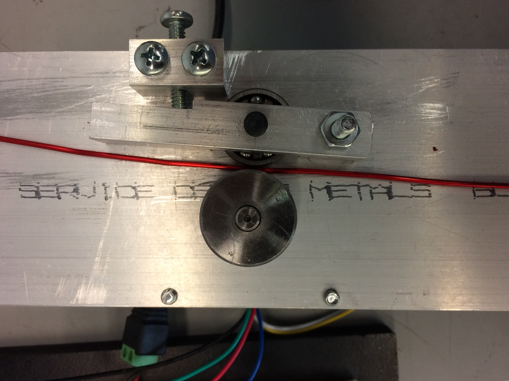

BendU
Integration
The integration of the system involves coordinating challenges between the mechnical, electrical, and software team. Our diagram below:

Sprint 1
October 25 2015
For the first sprint, we focused on getting working individual prototypes of each of the subsystems. For the mechanical side, we built a basic wire feeding and cutting mechanism. For the electrical side, we figured out how to control stepper motors and implemented basic control using a potentiometer and LCD screen. We managed to do a basic integration of the systems about 3/4ths of the way through the sprint


By the end of the sprint, we had a few seperately working devices, with a low level of integration.
Integration Lessons from the Sprint
We tried to integrate the system after developing the individual components. There were difficulties in getting the system to work correctly together due to little planning done. We will spend more time in the future with an emphasis on designing for integration and starting integration earlier in the process in order to minimize difficulties.
Sprint 2
November 8 2015
In this sprint, we had accomplished the first half of our MVP in getting a feeding system integrated and working. We integrated the electrical system to a feeding system and made it capable of feeding a predescribed amount of wire as given through the Arduino Serial Console.
Integration Lessons from the the Sprint
The main issues we found during this sprint was dealing with the impacts of integration. Although we were able to put together a system, we saw issues with the accuracy of the different mechanisms. In particular, there was an issue in getting the mechanical system to feed the amount of wire that the electrical system determined. Hence, we plan to spend more time to match the input expectations and the actual output.
Sprint 3
November 20 2015
For the third sprint, we focused on getting a full minimum viable product working. As a result, this sprint consisted of building the bending system, a software interface, and getting them to interface nicely with our current system. In order to do this, we moved our current electrical components to a protoboard for ease of merging, devised a universal computer interface, and designed the bender to interface with the mechanical system.
Integration Lessons from the the Sprint
This sprint we still had issues with precision of parts and friction within the system. Consequently, we ended up focusing on reducing these imprecisions. Adding the bending system impacted the precision even more: the 3-D parts were unable to stand up to the pressure exerted by our motor's torque and as a result the calculations our electrical and software systems were inaccurate. This sprint was also the first time we attempted to integrate a computer software system. We had significant issues with communication - the computer commands were unable to be properly interpreted by the Arduino. We ended up not using our computer software and stuck with only Arduino firmware.
Sprint 4
December 1 2015
For the fourth sprint, we worked primarily on refining the current structure into a more accurately performing and aesthetic design and integrating our finished mechanical system with the final electrical and software systems. An important issue was the setbacks in final machining of the mechanical system leading to significant delays. For example, we accidently machined the wrong side of a component, which caused delays in putting together a full system and integration testingWe designed a laser-cut MDF box for our machine and worked on getting the electronics housed inside the box. On the software side there were significant delays in getting our computer python interface to be able to convey user inputs through serial to the Arduino and execute the proper commands. Our biggest challenge was getting the individual final systems ready in time to test Integration
Integration Lessons from the the Sprint
For the fourth sprint integration was the main focus. The multiple delays and miscommunications resulted in a late full integration test. In order to address this kind of failure mode for future projects, we plan to do more extensive machine preparation and try to prepare the seperate components faster in order be able to begin integration tests earlier.